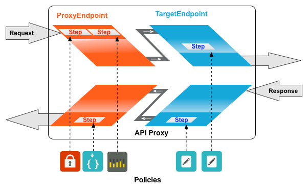
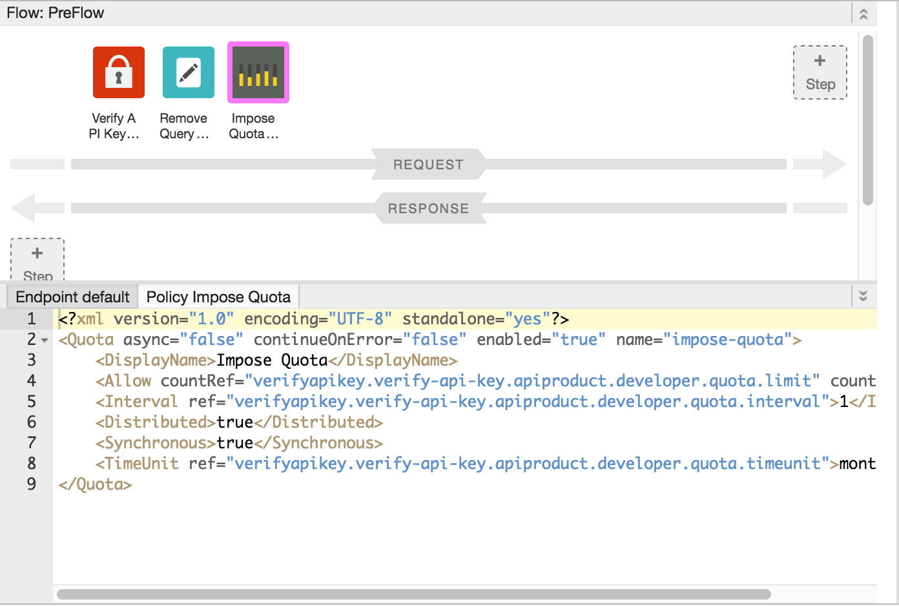
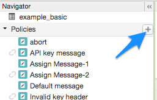

[toc]
Apigee Edge enables you to 'program' API behavior without writing any code, by using 'policies'. A policy is like a module that implements a specific, limited management function. Policies are designed to let you add common types of management capabilities to an API easily and reliably. Policies provide features like security, rate-limiting, transformation, and mediation capabilities, saving you from having to code and maintain this functionality on your own.
You're not limited to the set of policy types provided by Apigee Edge. You can also write custom scripts and code (such as JavaScript and Node.js applications), that extend API proxy functionality and enable you to innovate on top of the basic management capabilities supported by Apigee Policies.
Technically, a policy is an XML-formatted configuration file. Each policy type's structure (for example, the required and optional configuration elements) is defined by an XML schema. If you are proficient with XML tools, it is worthwhile to familiarize yourself with the policy schemas in the API Platform samples on Github.
Edge Policy types are grouped into the following functional categories:
Policies in the traffic management category enable you to control the flow of request and response messages through an API proxy. These policies support both operational- and business-level control. They give you control over raw throughput, and can also control traffic on a per-app basis. Traffic management policy types enable you to enforce quotas, and they also help you to mitigate denial of service attacks.
Policies in the security category support authentication, authorization, as well as content-based security.
Policies in the mediation category enable you to actively manipulate messages as they flow through API proxies. They enable you to transform message formats, from XML to JSON (and vice-versa), or to transform one XML format to another XML format. They also enable you to parse messages, to generate new messages and to change values on outbound messages. Mediation policies also interact with basic services exposed by API Services, enabling you to retrieve data about apps, developers, security tokens, and API products at runtime.
Policies in the extension category enable you to tap into the extensibility of API Services to implement custom behavior in the programming language of you choice.
Each Policy type is documented in detail in the http://docs.apigee.com/node/14795. This topic demonstrates general interaction, showing you how to create Policies, and how to attach them to Flows in an API proxy configuration.
Adding policy-based capabilities to an API proxy is a two-step process:
The diagram below shows the relationship between policies and Flows. As you can see, a policy is attached to a Flow as a processing "Step". To configure the desired behavior for your API, you need to understand a little bit about Flows. (This topic was covered earlier in http://docs.apigee.com/node/14717.)

One type of policy that is commonly used is SpikeArrest. SpikeArrest prevents sudden increases in message traffic that might swamp your backend services.
To attach a policy to a Flow:
Display Name: Unique display name for the policy. The UI will generate a default name, but it is advisable to create a descriptive name for the policy. This will ensure that other developers in your organization have an easy time understanding what the policy is intended to do.
Name: Unique name for the policy. The policy name matches the display name with the following exceptions:
Spaces are replaced by dashes.
Consecutive dashes are replaced by a single dash.
Except for dashes, underscores, and spaces (which are replaced, as noted above), characters that are not alphanumeric, such as pound signs, percent signs, ampersands, and so on, are removed.
The policy is attached to the selected flow.
After the policy is attached, you’ll see the policy displayed in the Designer view for the flow, in this example the PreFlow of the default proxy endpoint, and in the Policies list in the Navigation pane. The Code view, which displays the XML for the newly attached policy, displays below the Designer view. Edge generates an instance of the policy that contains a set of reasonable default values.

To add a policy without attaching it to a flow, which is useful for http://docs.apigee.com/node/8401, click + in the Policies bar in the Navigator view to open the Add Policy dialog and add the policy (as described in steps 4 through 6 in the previous section).

A policy that is not attached to any flow is flagged with the "detached" icon in the Policies list, as shown adjacent to the API key message policy shown in the previous figure.
After you create the policy, you can attach it to a flow by dragging and dropping it from the Policies list to the desired flow in the Designer view.
To detach a policy from a Flow, select the Flow. Mouse over the icon for the policy in the Designer view of the Flow. Click the X in the circle that appears in the icon.
To delete a policy instance, mouse over the entry for the policy in the Navigator view. Click the X in the circle that appears to the right of the entry.
When the UI generates a policy instance, it applies reasonable default values for common settings. You may need to modify these settings to meet your requirements.
For example:<?xml version="1.0" encoding="UTF-8" standalone="yes"?> <SpikeArrest async="false" continueOnError="false" enabled="true" name="spikearrest-1"> <DisplayName>SpikeArrest-1</DisplayName> <FaultRules/> <Properties/> <Identifier ref="request.header.some-header-name"/> <MessageWeight ref="request.header.weight"/> <Rate>30ps</Rate> </SpikeArrest>
You can configure a policy by directly editing its XML configuration in the Code view. For example, the peak message rate for the Spike Arrest policy is initially set to 30 messages per second. You can change the peak rate by changing the <Rate> element value in the XML for the policy. For further details about configuring policies, see the Policy Reference.
You can also cut-and-paste policies into the Code view. This is a great way to re-use policies from the samples available on GitHub.
When you make changes to a policy definition in the Code view, the changes are reflected in the Property Inspector. The reverse is also true — make changes in the Property Inspector and they appear in the XML in the Code view.
For documentation specific to the Quota policy used in this topic, see http://docs.apigee.com/node/56.
You can create and edit policies locally, using your favorite text or XML-aware editor or IDE. This topic uses the Quota policy type as an example of how to create, configure, attach, deploy, and test policies.
Most API proxies enforce a quota. Quotas provide control over how often a client app is permitted to invoke an API over a given time interval. In the example below, a Quota policy is configured to limit apps to 1 request per minute. (While this may not be realistic, it does provide a simple way to see the effects of a policy.)
In an API proxy configuration, Policy files are stored as XML files under /apiproxy/policies directory.
For example, a policy of type Quota called "QuotaPolicy" could be created as a file called QuotaPolicy.xml with the following content:
<Quota enabled="true" continueOnError="false"
async="false" name="QuotaPolicy">
<Allow count="1"/>
<Interval>1</Interval>
<TimeUnit>minute</TimeUnit>
</Quota>
You can create a text file by hand, or you can generate the policy from an XML schema. All policies have some settings that are specific to the policy type, and some settings that are generic across all policies. For reference, policy schemas are provided in the API Platform samples on GitHub.
All policies define the following attributes:
enabled: Indicates whether the policy is turned "on" or "off". Policies can be enabled/disabled at runtime by changing this setting. A policy that has enabled set to false is not enforced.continueOnError: Defines whether the pipeline should continue processing the message if the policy fails. When enforcing quota policies, errors likely indicate that the quota has been exceeded, and, therefore, this attribute should be set to false.async: In a policy, enabling async=true tells API Services to run the policy inside a different thread pool, isolated from the regular pool that is servicing the request/response Flow. This is an internal optimization that will rarely be of use to API developers.name: The name that you give to this policy. This name is unique to this policy instance, and it is used to attach the policy to the flow as a processing step.Except for name, you rarely need to modify the default settings for these policy attributes. For this reason, and for clarity, they are often excluded from the policy samples in the documentation.
In the example above, the elements Allow, Interval, and TimeUnit are specific to the Quota policy. These elements provide settings that API Services enforces on behalf of an API. Other policy types define their own settings, which you can learn about in the Policy Reference.
Policies are not executed until they are attached to a Flow. You can create a Policy attachment by naming a Policy in a Step configuration.
The choice of attachment point is critical to the behavior of your API proxy. For example, if you attach the Quota policy to a response Flow, then the Quota would be enforced after the request message was sent to the backend service. That would defeat the purpose of applying a Quota policy! Therefore, you need to attach the Quota policy as a processing Step on the request Flow.
The format of a policy attachment is:
<Step>
<Name>{policy_name}</Name>
</Step>
For example:
<Step>
<Name>QuotaPolicy</Name>
</Step>
The {policy_name} variable must be the same as the name attribute in the policy (stored under /policies) that you want to attach. The names must match exactly, as name matching is case-sensitive.
A policy is attached to a Flow by adding the Step configuration to the appropriate request or response Flow element in a ProxyEndpoint or TargetEndpoint configuration.
You can attach a policy to a request or response Flow. Request and response Flows are further subdivided in to PreFlow and PostFlow.
The following example demonstrates the minimal ProxyEndpoint configuration, with no policy attachments. It simply defines the (inbound) HTTPProxyConnection and a RouteRule.
<ProxyEndpoint name="default">
<HTTPProxyConnection>
<BasePath>/weather</BasePath>
<VirtualHost>default</VirtualHost>
</HTTPProxyConnection>
<RouteRule name="default">
<TargetEndpoint>default</TargetEndpoint>
</RouteRule>
</ProxyEndpoint>
You must modify this configuration so that the ProxyEndpoint enforces a Quota policy (as a processing Step) before the API proxy performs any other processing. If a developer has exceeded a Quota, you don't want to waste any computational resources on additional requests.
To enforce this configuration, you attach a processing Step to the request PreFlow as follows:
<ProxyEndpoint name="default">
<PreFlow>
<Request>
<Step><Name>QuotaPolicy</Name></Step>
</Request>
</PreFlow>
<HTTPProxyConnection>
<BasePath>/weather</BasePath>
<VirtualHost>default</VirtualHost>
</HTTPProxyConnection>
<RouteRule name="default">
<TargetEndpoint>default</TargetEndpoint>
</RouteRule>
</ProxyEndpoint>
Sometimes, you might want a policy to execute after some other initial processing on the ProxyEndpoint. For example, you want to check Quota in the PreFlow, then perform another set of processing after Quota is checked, such as converting the request from JSON to XML. To do so, attach a policy to the PostFlow request path. The following is a sample request PostFlow attachment. This policy would execute on the request message after all of the policies in the PreFlow (and any conditional flows) execute.
<PostFlow>
<Request>
<Step><Name>JSONtoXMLPolicy</Name></Step>
</Request>
</PostFlow>
The following is a sample response PostFlow attachment. This policy would execute on the response message. (The ProxyEndpoint response PostFlow is the final processing phase before the response is returned to the requesting client app.)
<PostFlow>
<Response>
<Step><Name>XMLtoJSONPolicy</Name></Step>
</Response>
</PostFlow>
You can also define conditional Flows that execute between the PreFlow and PostFlow phases. This is covered in the next topic, http://docs.apigee.com/node/14723.
For policy changes to take effect, you must deploy the API proxy revision to an environment. After you attach a policy or make changes to an existing policy, use the management UI or the management API to deploy the changes.
To verify that a policy is enforced properly, the API must be invoked by an HTTP client. To verify this Quota configuration, submit multiple requests to the API, exceeding the quota limit that you set in the quota policy. (The URI path, configured as the base path setting in the ProxyEndpoint, in the request below is /weather).
http://{org_name}-test.apigee.net/weather/forecastrss?w=12797282
After you submit more than 1 request within a minute, you should see the following error message:
{"fault":{"faultstring":"policies.ratelimit.QuotaViolation","detail":{"errorcode":"policies.ratelimit.QuotaViolation"}}}
This indicates that the Quota policy is being enforced by API Services.
Note the format of the error message above. It contains a faultstring property and an errorcode property. In many cases, you need to implement some behavior to handle these errors. For example, you may wish to issue a customized message to a developer whose app has exceeded the Quota.
For more on fault handling, see http://docs.apigee.com/node/8401.
To meet basic management requirements, API proxies usually enforce the following policies:
Working samples of policy configurations are available in the http://docs.apigee.com/node/14921 on GitHub.